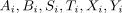
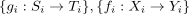
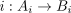
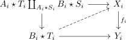
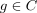
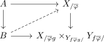
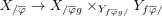

set with induced pushout left join morphism admitting lift as saturated set
1. Proposition
Let

be simplicial sets,
be sets of morphisms of simplicial sets Then the set of morphisms
of morphisms 
such that
admits a lift for

a saturated set2. Proof
corollary of bijection between lifting problems of join slice adjunction as it sufffices to construct a lift for

This is saturated as set with left lifting property against
